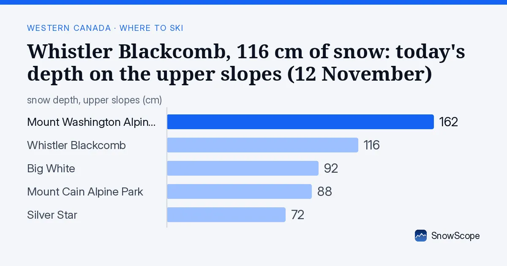

Whistler Blackcomb, 116 cm of snow: today's depth on the upper slopes (12 November)
Whistler Blackcomb sits at 116 cm on the upper slopes today, the second-deepest snow in Western Canada after Mount Washington Alpine Resort with 162 cm. The key difference is height: Whistler's snow thickens as you climb, reaching 85 cm at the summit (2,259 m), while the lower slopes stay thin—a pattern typical of early season across the region's 39 snow-covered resorts.
See the live snow forecast for Whistler Blackcomb in the SnowScope appSnow depth, powder alerts and the 3D map, free.
How Whistler compares right now
Mount Washington Alpine Resort leads with 162 cm, but Whistler Blackcomb is catching up fast. Big White sits third at 92 cm, Mount Cain Alpine Park at 88 cm, and Silver Star at 72 cm. These five resorts hold most of the region's snow; the other 34 have less.
Snow coverage across Western Canada has shrunk from 281,250 km² two days ago to 255,860 km² today. By 15 November, the SnowScope map shows only 245,900 km² will stay white—a loss typical for mid-November as lower elevations shed their thin early-season pack.
| Resort | Snow depth | New snow, 72 h | Coming, next days | Top |
|---|---|---|---|---|
| Mount Washington Alpine Resort | 162 cm | 4 cm | 7 cm | 1,569 m |
| Whistler Blackcomb | 116 cm | 40 cm | 83 cm | 2,259 m |
| Big White | 92 cm | 4 cm | 2 cm | 2,271 m |
| Mount Cain Alpine Park | 88 cm | 15 cm | 37 cm | 1,616 m |
| Silver Star | 72 cm | 2 cm | 2 cm | 1,886 m |

The vertical story at Whistler
Whistler's snow depth changes with height. At the base (653 m) there is no snow on the ground. Climb to mid-mountain (1,456 m) and you find 38 cm. The summit (2,259 m) holds 85 cm. This layering means the top of the mountain is where real skiing lives right now.
The freezing level on 12 November ranges from 2,240 m to 2,670 m at Whistler, so the entire mountain sits in cold air. By 14 November, that level drops to 1,460–1,670 m, and fresh snow will fall as powder rather than sleet or rain.
Snow arriving this week
The forecast brings 83 cm of new snow to Whistler Blackcomb between now and 15 November. Most of that (59 cm) arrives on 15 November. This is the biggest storm of the week: Mount Cain Alpine Park gets 37 cm, while Mount Washington Alpine Resort picks up only 7 cm.
The timing matters. Early-week snow (13 and 14 November) will be light—1 and 23 cm. The heavy fall comes at the end, so conditions may change rapidly. Check the map again the morning you plan to ski.
Whistler versus past Novembers
At mid-mountain (1,456 m), Whistler shows 30 cm today, well below the 80 cm typical for 12 November. Only 3 of the past 46 winters were this thin at this height this early. The snow is behind schedule.
Big White tells a different story. Its mid-mountain (1,891 m) holds 44 cm, deeper than 39 of the past 46 winters on this date. That resort is ahead of normal, though it has received almost no new snow in the past three days.
What you need to know
Early-season snow is thin and patchy. Rocks, stumps and grass hide just beneath the surface across the base and mid-mountain zones. Ski groomed pistes until the full snowpack builds in December.
Shade saves snow. High north-facing slopes stay frozen longer than sunny south-facing terrain. On warm afternoons, seek elevation and aspect.
Tips for skiers
- Target the upper slopes and ridges at Whistler Blackcomb where 85 cm lies on the ground. Lower terrain is marginal.
- Watch for the Friday storm (15 November): 59 cm is forecast for Whistler. Plan to ski after it settles; conditions may be unstable immediately after heavy snow.
- Before 14 November, the freezing level sits high at Whistler (up to 2,680 m on 13 November). Wet snow is possible on the upper mountain early in the week. Snow will turn to powder as cold air arrives on 14–15 November.
- Early-season touring and off-piste skiing carry avalanche risk on fresh slopes. Read the official avalanche bulletin before you leave the piste.
- Check the SnowScope app for a fresh-snow alert at Whistler Blackcomb so you do not miss the week's main event on 15 November.
About these numbers
Resort snow depths are the deepest snow on the resort's upper slopes on the date shown; they are estimates for an area, not a measurement at one point. Forecasts can change. Always read the official avalanche bulletin before going off-piste.
Official avalanche bulletins: Avalanche Canada
Cite this report
For research, teaching or the press: the numbers and charts are free to reuse under CC BY 4.0 with this citation.
SnowScope (2026), Whistler Blackcomb, 116 cm of snow: today's depth on the upper slopes (12 November), https://snowscope.app/blog/en/2026/11/western-canada-whistler-blackcomb-snow-depth-today-12-november-2026.html, accessed 2026-11-12
SnowScope (Atlas Labs). (2026, November 12). Whistler Blackcomb, 116 cm of snow: today's depth on the upper slopes (12 November). SnowScope snow reports. https://snowscope.app/blog/en/2026/11/western-canada-whistler-blackcomb-snow-depth-today-12-november-2026.html
BibTeX
@misc{snowscope2026westerncanadawhistlerbla,
author = {{SnowScope (Atlas Labs)}},
title = {Whistler Blackcomb, 116 cm of snow: today's depth on the upper slopes (12 November)},
year = {2026},
month = nov,
howpublished = {\url{https://snowscope.app/blog/en/2026/11/western-canada-whistler-blackcomb-snow-depth-today-12-november-2026.html}},
note = {Published 2026-11-12 17:37 UTC; accessed 2026-11-12}
}· CC BY 4.0 · Methods, data and tools →
Whistler Blackcomb: snow and temperature by height, this winter vs last (tools) →
Follow Whistler Blackcomb
Free: a message when fresh snow is coming, and the forecast every morning.
More snow reports

Mount Washington Alpine Resort leads with 158 cm at the top on 15 November. Fresh snow at Whistler Blackcomb and Mount Cain Alpine Park also scores high for November skiing.

Mount Washington holds 145 cm on 8 November, the deepest in Western Canada, but the freezing level will climb above the summit by 11 November.

150 cm on the upper slopes: that is why Whistler Blackcomb heads our list. Snow on the ground, snow from the last 72 hours, snow still to come: …